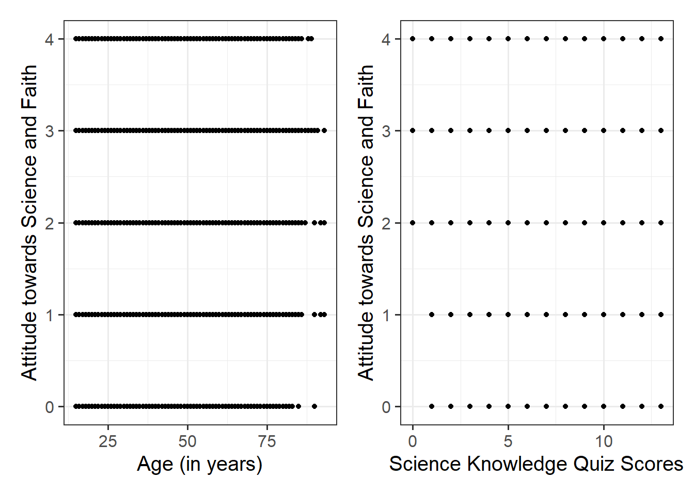

| variable | description |
|---|---|
| v5 | Participant ID |
| v6 | Nation ID: 1 = France, 2 = Belgium, 3 = The Netherlands, 4 = Germany West, 5 = Italy, 6 = Luxembourg, 7 = Denmark, 8 = Ireland, 9 = Great Britain, 10 = Northern Ireland, 11 = Greece, 12 = Spain, 13 = Portugal, 14 = Germany East, 15 = Norway, 16 = Finland, 17 = Sweden, 18 = Austria, 19 = Cyprus (Republic), 20 = Czech Republic, 21 = Estonia, 22 = Hungary, 23 = Latvia, 24 = Lithuania, 25 = Malta, 26 = Poland, 27 = Slovakia, 28 = Slovenia, 29 = Bulgaria, 30 = Romania, 31 = Turkey, 32 = Croatia, 33 Cyprus (TCC; not included), 34 = Iceland, 35 = Switzerland |
| kstot | Score on a science quiz composed of 13 true/false items. Scores can range 0-13. |
| age | Individual's age (in years) |
| male | Whether participant idenitfied as male (1) or female (0) |
| toomuchscience | Attitude to science and faith. Response to the question - We rely too much on science and not enough on faith. Responses were recorded on a 5-point scale from strongly disagree (0) to strongly agree (4) |
| solveprob | Number of explicitly mentioned target phrases in response to the question - Please tell me, in your own words, what it means to study something scientifically? |
Bootstrapping
Learning Objectives
At the end of this lab, you will:
- Understand the principles of bootstrapping
- Understand how to apply the bootstrap confidence interval to inference in linear models
What You Need
Required R Packages
Remember to load all packages within a code chunk at the start of your RMarkdown file using library(). If you do not have a package and need to install, do so within the console using install.packages(" "). For further guidance on installing/updating packages, see Section C here.
For this lab, you will need to load the following package(s):
- tidyverse
- psych
- patchwork
- sjPlot
- kableExtra
- car
Presenting Results
All results should be presented following APA guidelines.If you need a reminder on how to hide code, format tables/plots, etc., make sure to review the rmd bootcamp.
The example write-up sections included as part of the solutions are not perfect - they instead should give you a good example of what information you should include and how to structure this. Note that you must not copy any of the write-ups included below for future reports - if you do, you will be committing plagiarism, and this type of academic misconduct is taken very seriously by the University. You can find out more here.
Lab Data
You can download the data required for this lab here or read it in via this link https://uoepsy.github.io/data/science-faith-attitude.csv
Study Overview
Research Question
Is there an association between peoples’ attitudes towards science and faith and their scientific knowledge after accounting for their age?
Setup
Setup
- Create a new RMarkdown file
- Load the required package(s)
- Read in the science-faith-attitude dataset into R, assigning it to an object named
ebsurvey
Exercises
Study Overview & Data Management
Question 1
Examine the dataset, and perform any necessary and appropriate data management steps.
Note, to address the research question, we only need to refer to the kstot, age, and toomuchscience variables. Subset the data to only have those 3 columns.
Hint
- To subset the data to only include the 3 variables of interest, we can use the
select()function
- Check that the dataset is complete (i.e., are there any
NAvalues?). We can check this usingis.na()- There are numerous ways to deal with this. Two common commands are
na.omit()anddrop_na(). The former will remove all rows from a dataset that containNAvalues in any column. In the latter, we can specify which columns we want to identifyNAvalues in, and remove only rows containingNAvalues for those specific columns. In other words, the latter can help to preserve more data
- There are numerous ways to deal with this. Two common commands are
- If needed, provide better variable names
Question 2
Provide a brief overview of the study design and data, before detailing your analysis plan to address the research question.
Hint
- Give the reader some background on the context of the study
- State what type of analysis you will conduct in order to address the research question
- Specify the model to be fitted to address the research question (note that you will need to specify the reference level of any categorical variable(s))
- Specify your chosen significance (\(\alpha\)) level
- State your hypotheses
Much of the information required can be found in the Study Overview codebook. The statistical models flashcards may also be useful to refer to.
Descriptive Statistics & Visualisations
Question 3
Alongside descriptive statistics, visualise the marginal distributions of the attitude, science_knowledge, and age variables.
Hint
Review the many ways to numerically and visually explore your data by reading over the data exploration flashcards.
For examples, see flashcards on descriptives statistics tables and data visualisation > marginal distributions - examples flashcard.
Question 4
Produce plots of the associations between the outcome variable and each of the explanatory variables.
Hint
Review how to visually explore bivariate associations via the data explortation flashcards.
For specifically visualising associations between variables, see the visual exploration > bivariate associations - examples.
Note that using geom_point() here might not be the best idea - all we would see from the plot is all combinations of Attitude towards Science and Faith and a) Age and b) Science Knowledge that were observed in the data, and this is not very informative:

Instead, you may want to consider using geom_jitter() to add a little bit of noise (or jitter) to the plot. Within the geom_jitter() argument, take some time to experiment with the size = and alpha = arguments to find optimal values to aid interpretation.
Question 5
Produce a correlation matrix of the variables which are to be used in the analysis, and write a short paragraph describing the associations.
Hint
To review how to calculate the correlation coefficient and for examples, see the correlation flashcards. Remember to interpret in the context of the research question.
Model Fitting & Interpretation
Question 6
Fit the specified model, and assign it the name “att_mdl”.
\[ \text{Attitude} = \beta_0 + \beta_1 \cdot \text{Science Knowledge} + \beta_2 \cdot \text{Age} + \epsilon \]
Hint
See the statistical models flashcards, specifically the numeric outcomes & numeric predictors > multiple linear regression models flashcards for a reminder on how to specify models, as well as an example.
For how to format and write your model in RMarkdown, see the LaTeX symbols and equations flashcard.
Question 7
Check the assumptions of your model. Note any violations of the model assumptions.
Hint
Review the assumptions flashcards and consider the most efficient way to do this (might be a good idea to review the useful assumption plots).
Question 8
Bootstrap your model, computing 1000 bootstrap samples.
Provide key model results in a formatted table, and interpret your coefficients in the context of the research question.
Hint
Bootstrapping
Review the bootstrap flashcards for an overview and example.
Interpretation
Intercept: The intercept of a multiple regression model can be interpreted as the average expected value of the dependent variable when all of the independent variables equal zero.
Scientific Knowledge: This represents the average marginal effect of \(X1\) on \(Y\), and can be interpreted as the expected change in \(Y\) for a one-unit increase in \(X1\) controlling for \(X2\).
Age: This represents the average marginal effect of \(X2\) on \(Y\), and can be interpreted as the expected change in \(Y\) for a one-unit increase in \(X2\) controlling for \(X1\).
See the multiple linear regression models > interpretation of coefficients flashcard for a recap on interpretation.
Table
You can’t use tab_model() here, but instead will need to use kable() and kable_styling(). Check over the tables flashcard, and in particular review the RMD bootcamp lesson which is signposted to.
Question 9
Obtain 95% confidence intervals for your bootstrapped model estimates.
Hint
Review the bootstrap flashcards.
Writing Up & Presenting Results
Question 10
Interpret the results from your bootstrapped model in the context of the research question.
Make reference to your key result table(s) and plot(s).
Hint
Make sure to include a decision in relation to your null hypothesis - based on the evidence, should you reject or fail to reject the null?
Compile Report
Compile Report
Knit your report to PDF, and check over your work. To do so, you should make sure:
- Only the output you want your reader to see is visible (e.g., do you want to hide your code?)
- Check that the tinytex package is installed
- Ensure that the ‘yaml’ (bit at the very top of your document) looks something like this:
---
title: "this is my report title"
author: "B1234506"
date: "07/09/2025"
output: bookdown::pdf_document2
---
What to do if you cannot knit to PDF
If you are having issues knitting directly to PDF, try the following:
- Knit to HTML file
- Open your HTML in a web-browser (e.g. Chrome, Firefox)
- Print to PDF (Ctrl+P, then choose to save to PDF)
- Open file to check formatting
Hiding Code and/or Output
Review Lesson 5 of the rmd bootcamp for a detailed description/worked examples.
To not show the code of an R code chunk, and only show the output, write:
```{r, echo=FALSE}
# code goes here
```To show the code of an R code chunk, but hide the output, write:
```{r, results='hide'}
# code goes here
```To hide both code and output of an R code chunk, write:
```{r, include=FALSE}
# code goes here
```
Tinytex
You must make sure you have tinytex installed in R so that you can “Knit” your Rmd document to a PDF file:
install.packages("tinytex")
tinytex::install_tinytex()